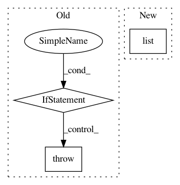

9b57cbd8ec711e3af33846e62ad7d1fbbdcaf5cd,mne/io/persyst/persyst.py,RawPersyst,__init__,#RawPersyst#,59
Before Change
// determine if .dat file exists where it should
error_msg = f"The data path you specified " \
f"does not exist for the lay path, {lay_fname}"
if op.isabs(dat_path) and not op.exists(dat_fname):
raise FileNotFoundError(error_msg)
if not op.exists(dat_fpath):
raise FileNotFoundError(error_msg)
fileinfo_dict[key] = val
// ChannelMap
After Change
patient_dict[key] = val
// Comments (turned into mne.Annotations)
elif section == "comments":
comments_dict[key] = comments_dict.get(key, list()) + [val]
num_comments += 1
// get numerical metadata
In pattern: SUPERPATTERN
Frequency: 4
Non-data size: 3
Instances
Project Name: mne-tools/mne-python
Commit Name: 9b57cbd8ec711e3af33846e62ad7d1fbbdcaf5cd
Time: 2021-02-01
Author: adam2392@gmail.com
File Name: mne/io/persyst/persyst.py
Class Name: RawPersyst
Method Name: __init__
Project Name: daavoo/pyntcloud
Commit Name: 4de35e3bf617cd61a86da762a1fe29af5e2db1f7
Time: 2018-02-25
Author: daviddelaiglesiacastro@gmail.com
File Name: pyntcloud/plot/points.py
Class Name:
Method Name: plot_PyntCloud
Project Name: librosa/librosa
Commit Name: e949a7462a0552c36e13f5d0d9147c4fc52cee32
Time: 2015-08-14
Author: brian.mcfee@nyu.edu
File Name: librosa/feature/utils.py
Class Name:
Method Name: sync
Project Name: sentinel-hub/eo-learn
Commit Name: 412dd41ebd8f3573ba5762a13f5e80d8244a1d89
Time: 2019-12-24
Author: jovan.visnjic@sinergise.com
File Name: core/eolearn/core/eodata.py
Class Name: EOPatch
Method Name: save_aws_new